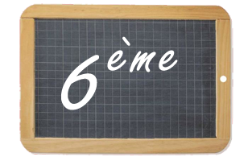

LABO LEBAS
Où on retrouve les maths que l'on fait au collège Alphonse Daudet
Cahier de cours
Cette année, nous organisons la progression de façon spiralée en alternant entre les chapitres sur le Numérique, la Géométrie et les Données Voici la liste des cours à copier dans le cahier de cours. Cela vous permettra de rattraper vos éventuels trous dûs à des absences. Profitez-en pour vérifier que vos formules ont correctement été copiées.
- N1 – Addition et soustraction de relatifs
- G1 – Repères et translations
- D1 – Proportionnalité
- N2 – Produit et quotient de relatifs
- G2 – Théorème de Pythagore
- D2 – Statistique 1
- N3 – Sommes de fractions
- G3 – Triangles égaux
- D3 – Graphiques circulaires
- N4 – Calcul littéral 1
- G4 – Pyramides et cônes
- D4 – Probabilités
- N5 – Produit de fractions
- G5 – Réciproque de Pythagore
- D5 – Statistique 2
- N6 – Calcul littéral 2
- G6 – Volumes de solides
- D6 – Graphiques proportionnels
- N7 – Inverse
- G7 – Triangles semblables
- N8 – Puissances de 10
- D7 – Statistiques 3
- N9 – Résolution d’équations
- G8 – Rotations
- N10 – Notation scientifique
- D8 – Grandeurs composées
- N11 – Factorisation
La liste de ces cours sera mise à jour à chaque chapitre terminé
Projets Scratch
Numérique 1 - Somme de relatifs
Pour s'entraîner :
- Les pages 6 et 7 du iParcours
- Les pages 73 et 74 du livre Delta
Les jeux :

Page des 4ème
Progression annuelle :
- Addition et soustraction de relatifs
- Repères et translations
- Proportionnalité
- Produit et quotient de relatifs
- Théorème de Pythagore
- Statistique 1
- Sommes de fractions
- Triangles égaux
- Graphiques circulaires
- Calcul littéral 1
- Pyramides et cônes
- Probabilités
- Produit de fractions
- Réciproque de Pythagore
- Statistique 2
- Calcul littéral 2
- Volumes de solides
- Graphiques proportionnels
- Inverse
- Triangles semblables
- Puissances de 10
- Statistiques 3
- Résolution d’équations
- Rotations
- Notation scientifique
- Grandeurs composées
- Factorisation
Raccourcis importants
-
Page des 6èmes
Les cours de 6ème -
Page des 4èmes

Les cours de 4ème -
Page des parents
Les cours de M. Lebas -
Atelier Web
Cinéma et web -
Mathador
Exemple de mathador -
Vacances apprenantes
Cinéma et web -
 Pronote
Pronote
Un raccourci vers Pronote -
 Site du collège
Site du collège
Le site du collège, dans lequel vous retrouvez toutes les actualités